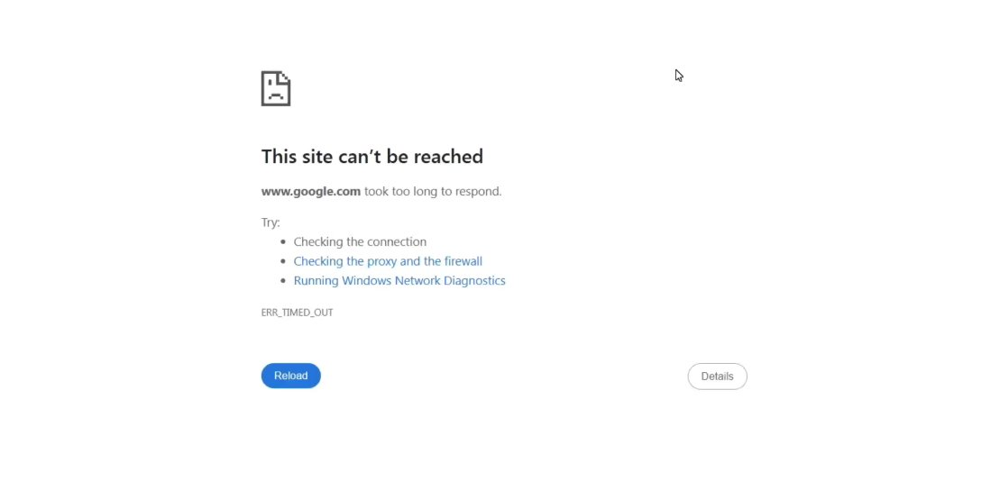
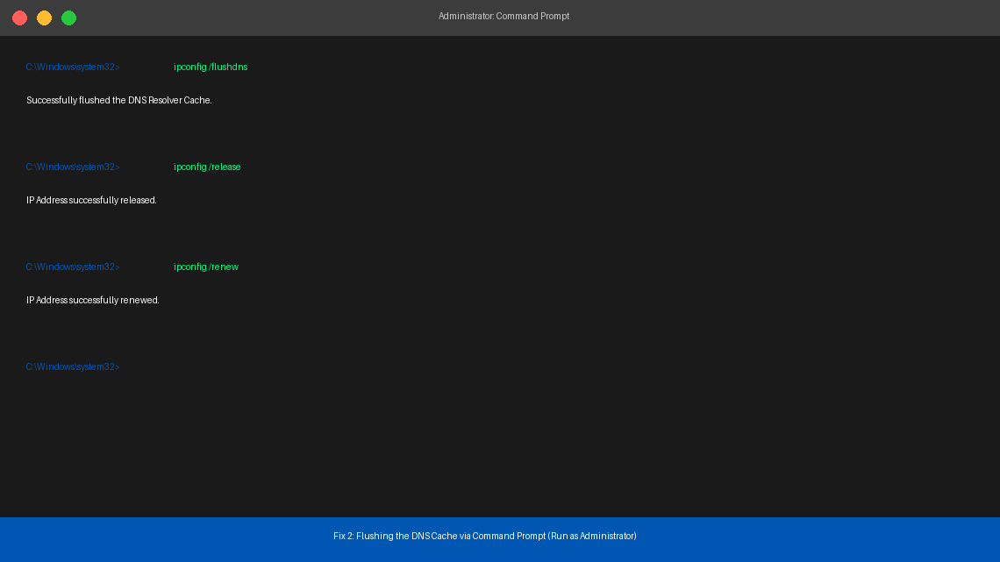
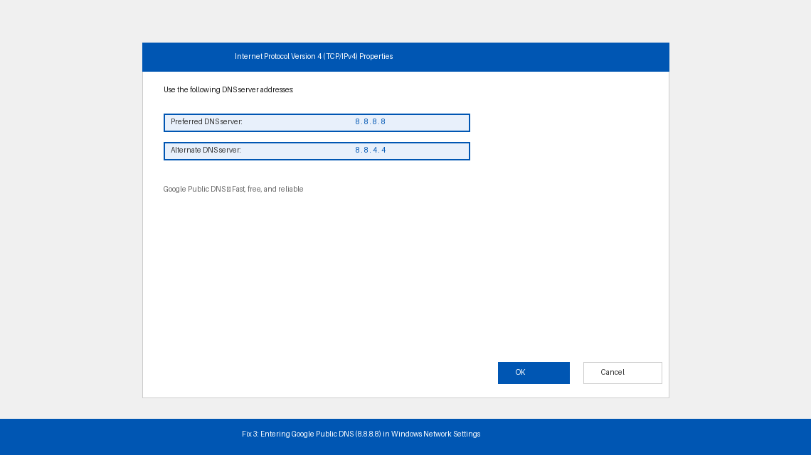

You Clicked a Link. Chrome Just Sat There.
You click a link — one you’ve visited a hundred times — and instead of loading, Chrome just sits there spinning. Then comes the white screen, the dinosaur-free void, and those dreaded words: ERR_CONNECTION_TIMED_OUT.
You refresh. Same thing. You close the tab and reopen it. Still nothing. You check if the internet is down, but every other app on your phone is working perfectly fine. So what exactly is going on?
This error is one of the most common and most misunderstood Chrome problems out there. It looks catastrophic — like the entire internet just stopped working — but in most cases, the fix takes less than five minutes and doesn’t require you to touch a single cable or call your internet provider.
This guide explains exactly what’s happening and walks you through five fixes that actually work, starting with the simplest one first.

What Does ERR_CONNECTION_TIMED_OUT Mean?
Think of loading a website like sending a letter and waiting for a reply. Your browser sends a request to a web server saying “Hey, please send me your webpage.” Normally, the server writes back within a second or two and the page loads.
ERR_CONNECTION_TIMED_OUT means the server never wrote back — and Chrome got tired of waiting.
But here’s what most people miss: the problem isn’t always the server. In fact, the majority of the time, the problem is something on your end that’s preventing the request from ever reaching the server in the first place. The most common culprits are:
- Your DNS cache is outdated or corrupted — your computer is looking up the wrong address for the website, like sending a letter to an old address that no longer exists.
- Your IP address or TCP/IP network settings have gotten scrambled, causing your connection requests to get lost in transit.
- A proxy or VPN is intercepting your traffic and failing to forward it correctly.
- Your browser’s cache has stored a broken version of the page and keeps trying to load that instead of fetching a fresh one.
- A firewall or antivirus program is quietly blocking the connection without telling you.
In plain English: your computer is trying to reach a website but something — usually invisible and fixable — is getting in the way before the request even leaves your machine.
Tools You’ll Need
Everything you need is already on your computer. Here’s the full list:
- A Windows, Mac, or Chromebook with Chrome installed
- Administrator access on your computer (needed for a couple of the steps)
- About 10–15 minutes of your time
No downloads, no software purchases, no technical background required.
Step-by-Step Fixes (Easiest to Hardest)
Work through these in order. The first two fixes alone resolve this error for the majority of users. Only move forward if the previous step didn’t work.
Chrome stores temporary data from websites to help them load faster. When that stored data becomes outdated or corrupted, it can cause Chrome to keep trying — and failing — to load a broken version of the page.
- Open Chrome and press Ctrl + Shift + Delete on Windows, or Cmd + Shift + Delete on Mac.
- In the panel that appears, set the Time Range to “All time” — not just the last hour, because cached data from weeks ago can still cause problems.
- Make sure the following three boxes are checked: Browsing history, Cookies and other site data, and Cached images and files.
- Click Clear data and wait for Chrome to finish.
- Close Chrome completely — don’t just close the tab. Right-click the Chrome icon in your taskbar and select “Close all windows,” or press Ctrl + Shift + Q.
- Reopen Chrome and try loading the website again.
If the page loads, you’re done. If not, move on.
This is the fix that works most often, yet most people have never heard of it. Your computer stores a local database of website addresses called a DNS cache. When that cache becomes stale or corrupted, your browser gets sent to the wrong address — or nowhere at all.
Flushing it forces your computer to look up every website address fresh, as if for the very first time.
On Windows:
- Press the Windows key, type cmd, then right-click Command Prompt and select “Run as administrator.”
- In the black window that appears, type the following commands one at a time, pressing Enter after each:
ipconfig /flushdnsipconfig /releaseipconfig /renew
- After each command runs, you’ll see a confirmation message. Wait for all three to complete.
- Close Command Prompt, reopen Chrome, and test the website.
On Mac:
- Open Terminal (press Cmd + Space, type “Terminal,” press Enter).
- Type the following and press Enter:
sudo dscacheutil -flushcache; sudo killall -HUP mDNSResponder - Enter your Mac password when prompted.
- Close Terminal, reopen Chrome, and test.
Most users who were pulling their hair out over this error get it fixed right here.

If flushing the cache didn’t help, the problem may be your ISP’s DNS server itself — it could be slow, overloaded, or temporarily down. Switching to a faster, more reliable public DNS server often resolves this instantly.
On Windows:
- Press Windows key + R, type ncpa.cpl, and press Enter to open Network Connections.
- Right-click your active connection (usually “Wi-Fi” or “Ethernet”) and select Properties.
- Select “Internet Protocol Version 4 (TCP/IPv4)” and click Properties.
- Select “Use the following DNS server addresses” and enter:
- Preferred DNS server: 8.8.8.8
- Alternate DNS server: 8.8.4.4
- Click OK, close all windows, and test in Chrome.
On Mac:
- Go to System Settings > Wi-Fi, click your network name, then click Details.
- Click the DNS tab, then the “+” button and add 8.8.8.8, then 8.8.4.4.
- Click OK and test in Chrome.

A VPN or proxy that’s struggling with connectivity will trigger ERR_CONNECTION_TIMED_OUT on every site it can’t reach. Even antivirus software with a built-in firewall can silently block specific websites without showing any obvious warning.
- If you have a VPN running, disconnect it completely and try the website immediately.
- Open Chrome, go to Settings > System > Open your computer’s proxy settings.
- Make sure “Use a proxy server” is switched Off.
- If you have antivirus software with a firewall (Avast, Norton, Kaspersky, McAfee, etc.), open it and temporarily disable the web shield or firewall.
- Test the website in Chrome right after each change.
- If the website loads after disabling the antivirus firewall, the antivirus is the culprit. Add the website as a permanent exception in your antivirus settings rather than leaving protection off.
If none of the above has worked, Chrome’s internal configuration or Windows’ network settings may have been corrupted — by a bad extension, a software update, or a setting changed in the background. Resetting restores everything to a clean default.
Reset Chrome flags:
- In Chrome’s address bar, type
chrome://flagsand press Enter. - Click “Reset all” in the top right corner.
- Click “Relaunch” when Chrome prompts you to restart.
Reset Chrome’s browser settings:
- Go to
chrome://settings/resetProfileSettingsin your address bar. - Click “Reset settings” and confirm. This resets your startup page, search engine, and extensions — it does not delete bookmarks or saved passwords.
Reset the Windows network stack entirely (Windows only):
- Open Command Prompt as administrator (see Fix 2, step 1).
- Run each of these commands, pressing Enter after each:
netsh winsock resetnetsh int ip resetipconfig /flushdns
- Restart your computer after all three commands complete — a full reboot is required for this to take effect.
- After restarting, open Chrome and test.
This combination fixes deep-seated network problems that survive every other troubleshooting step.
When to Call a Professional
If you’ve worked through all five fixes and the error persists, the problem has likely moved outside your computer entirely. Here’s when to stop troubleshooting and reach out for help:
- The error only appears on one specific website, but that website loads fine on your phone using mobile data (not Wi-Fi). The website may be blocking your ISP’s IP range, or it’s genuinely down for everyone. Check downdetector.com to confirm before assuming the fault is yours.
- Every single website times out — not just one. This points to a faulty router or a serious ISP outage. Try plugging your computer directly into the router with an Ethernet cable. If wired works but Wi-Fi doesn’t, your router needs attention. Call your ISP’s support line.
- The error appeared immediately after a Windows Update. Updates occasionally corrupt network drivers. Contact Microsoft Support or your PC manufacturer.
- You’re on a corporate or school network. IT-managed firewalls and content filters are controlled by your administrator — the fixes in this guide cannot override them. Contact your IT department directly.
For Chrome-specific bugs, the Google Chrome Help Community at support.google.com/chrome is free, well-monitored, and often has answers for niche issues within hours.
Quick Summary
| Fix | Difficulty | Time Needed |
|---|---|---|
| Clear Chrome cache and cookies | Very Easy | 2 minutes |
| Flush DNS cache via Command Prompt | Easy | 3 minutes |
| Switch to Google’s public DNS (8.8.8.8) | Moderate | 5 minutes |
| Disable VPN, proxy, and test firewall | Easy | 5 minutes |
| Reset Chrome flags and Windows network stack | Moderate | 10 min + restart |
Start at the top and work your way down. In the vast majority of cases, either clearing the cache or flushing the DNS will have your pages loading again before you’ve even finished your coffee.
If a specific fix worked for you, make note of which number it was — ERR_CONNECTION_TIMED_OUT has a habit of coming back, and next time you’ll know exactly where to start.